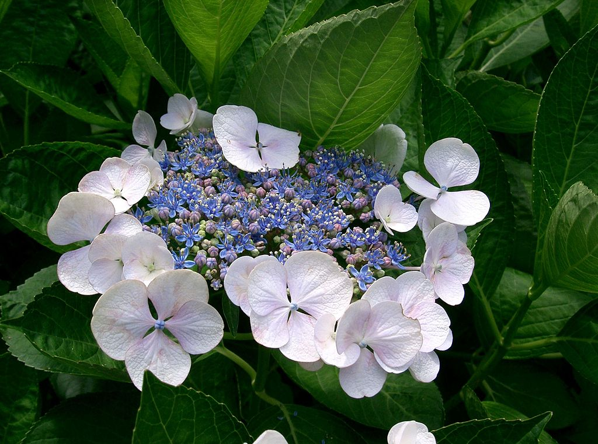
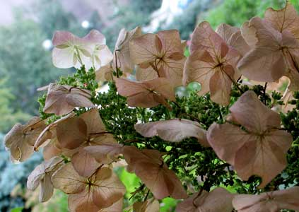

Про цветочки и не только!
Телефон: 89169996768
Почта: nimi9992@mail.ru

Всё, что вы хотели знать,
но боялись спросить,
про домашние растения!
но боялись спросить,
про домашние растения!
Про цветочки и не только!
Телефон: 89169996768
Почта: nimi9992@mail.ru
Гортензия
Описание
Большинство видов являются кустарниками 1—3 м высотой, некоторые виды — небольшие деревья, остальные — лианы, забирающиеся по стволам других деревьев на высоту до 30 м. Растения могут быть как листопадными, так и вечнозелёными, однако широко культивируемые виды умеренного пояса относятся к листопадным. Цветут гортензии с весны до поздней осени. Цветки собраны на конце стебля в красивые шарообразные соцветия — щиток или метёлку. У большинства видов цветочные головки содержат два типа цветков: мелкие плодущие (фертильные) цветки в середине и крупные бесплодные (стерильные) цветки по краям. У некоторых видов все цветки плодущие и имеют один и тот же размер. Плод гортензии — 2—5-раздельная коробочка с многочисленными мелкими семенами.
Особенности
Гортензии часто выращивают в садах в качестве декоративных растений из-за их крупных красивых соцветий.Почва должна быть плодородной. Гортензии предпочитают кислые почвы, поэтому их нередко сажают рядом с другими растениями, требующими кислую почву: вереском (Calluna), эрикой (Erica), водяникой (Empetrum). Гортензия любит тень и полутень, она страдает от прямых солнечных лучей, замедляет рост и развитие, её соцветия становятся мелкими. При посадке вносят органические и минеральные удобрения. Почва должна быть рыхлой. Для полива нужна мягкая вода, лучше дождевая, поскольку растение не выносит извести. Водопроводную воду нужно отстаивать, но даже это не всегда спасает от хлороза листьев. Каждый куст должен получать не менее двух вёдер воды в неделю. Некоторые виды и сорта рекомендуют ежегодно обрезать во время появления почек, в противном случае кусты вытягиваются в длину до тех пор, пока под тяжестью собственного веса не прогибаются, после чего могут обломиться.
